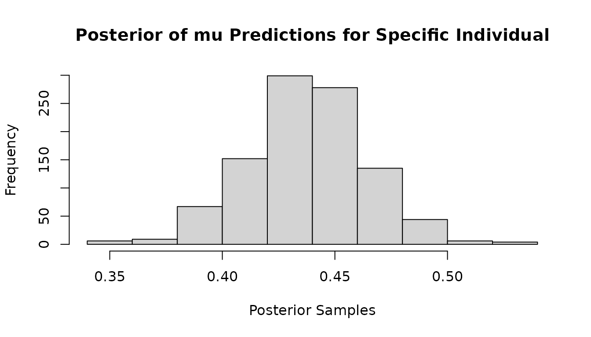
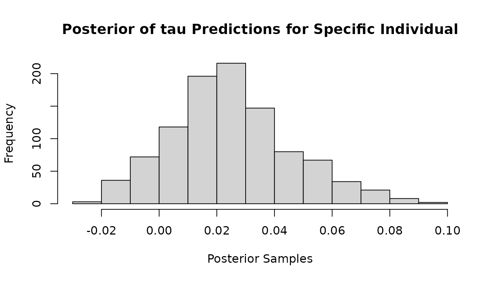

Full Guide
full-guide.RmdThis guide is intended as a more detailed version of the quick-start version. Our aim here is to describe the main uses-cases and functionalities of the mvbcf package, and to provide examples targeted at some common tasks. We will also cover all of the arguments of the run_mvbcf() function.
Creating Synthetic Data
Let’s start by creating some synthetic data. In this example we will imagine we have observational data on school students, and we want to determine if their participation in optional after-school tutoring lessons has had an impact on their test scores in mathematics and English.
Let’s also assume we have data on some important characteristics of the students such as age, gender, previous test-scores, and the education level and income of their parents.
set.seed(101)
n<-1000
age<-runif(n, 11, 12)
gender<-sample(c("Male", "Female"), n, replace=T)
previous_maths_score<-rnorm(n, 0.4, 0.08)
previous_english_score<-rnorm(n, 0.4, 0.08)
parent_education<-sample(c("School", "Bachelors", "Masters"), n,
replace=T, prob=c(0.5, 0.25, 0.25))
parent_income<-rnorm(n, 60000, 10000)
#############################
##Same format for test data##
#############################
n_test<-1000
age_test<-runif(n_test, 11, 12)
gender_test<-sample(c("Male", "Female"), n_test, replace=T)
previous_maths_score_test<-rnorm(n_test, 0.4, 0.08)
previous_english_score_test<-rnorm(n_test, 0.4, 0.08)
parent_education_test<-sample(c("School", "Bachelors", "Masters"), n_test,
replace=T, prob=c(0.5, 0.25, 0.25))
parent_income_test<-rnorm(n_test, 60000, 10000)To make the data-generating-process semi-realistic, let’s assume that students with lower test scores might be more likely to take part in after school tuition in order to increase their grades.
Let’s also assume that only students from high earning families might be able to afford extra tuition.
We’ll say that the probability of attending extra lessons is directly related to their average previous test score, but only students in a family with an income greater than 70000 can afford it.
true_propensity<-1-0.5*(previous_maths_score+previous_english_score)*(parent_income>70000)
extra_tuition<-rbinom(n, 1, true_propensity)
#############################
##Same format for test data##
#############################
true_propensity_test<-1-0.5*(previous_maths_score_test+previous_english_score_test)
true_propensity_test<-true_propensity_test*(parent_income_test>70000)
extra_tuition_test<-rbinom(n_test, 1, true_propensity_test)For the new maths and English scores after a year of taking part/not taking part in extra tuition, it is reasonable to imagine the following:
- The new maths/English score will usually be higher than the previous score because the students are learning more
- Students with highly educated or wealthy parents may have learned more due to extra educational resources at home
- Students who received extra tuition increased their test scores by more than students who did not
- Older students benefit more from extra tuition because of better developed concentration and study skills
new_maths_score<-previous_maths_score+
0.05+
0.05*(parent_education %in% c("Bachelors", "Masters"))+
(parent_income/2000000)+
extra_tuition*0.1*(age-11)+
rnorm(n, 0, 0.1)
#Note that this means the treatment effect is given by:
icate_maths<-0.1*(age-11)
new_english_score<-previous_english_score+
0.07+
0.03*(parent_education %in% c("Bachelors", "Masters"))+
(parent_income/2500000)+
extra_tuition*0.12*(age-11)+
rnorm(n, 0, 0.1)
#Note that this means the treatment effect is given by:
icate_english<-0.12*(age-11)
#############################
##Same format for test data##
#############################
new_maths_score_test<-previous_maths_score_test+
0.05+
0.05*(parent_education_test %in% c("Bachelors", "Masters"))+
(parent_income_test/2000000)+
extra_tuition_test*0.1*(age_test-11)+
rnorm(n_test, 0, 0.1)
#Note that this means the treatment effect is given by:
icate_maths_test<-0.1*(age_test-11)
new_english_score_test<-previous_english_score_test+
0.07+
0.03*(parent_education_test %in% c("Bachelors", "Masters"))+
(parent_income_test/2500000)+
extra_tuition_test*0.12*(age_test-11)+
rnorm(n_test, 0, 0.1)
#Note that this means the treatment effect is given by:
icate_english_test<-0.12*(age_test-11)Ok! Our data is ready! Let’s create a dataframe:
df<-as.data.frame(cbind(age,
gender,
previous_maths_score,
previous_english_score,
parent_education,
parent_income,
extra_tuition,
new_maths_score,
new_english_score))
#############################
##Same format for test data##
#############################
df_test<-as.data.frame(cbind(age_test,
gender_test,
previous_maths_score_test,
previous_english_score_test,
parent_education_test,
parent_income_test,
extra_tuition_test,
new_maths_score_test,
new_english_score_test))At present, the run_mvbcf() function requires the covariates to be numeric features. Therefore, before proceeding, we need to convert the factor variables (gender and parent_education) to numeric variables.
Gender does not have a clear ordering, so we will use a simple dummy variable (0=female, 1=male)
Parent_education does have an ordering to it so we will say (1=school, 2=bachelors, 3=masters)
df$gender<-ifelse(df$gender=="Female", 0, 1)
education_map<-list("School"=1, "Bachelors"=2, "Masters"=3)
df$parent_education<-as.numeric(education_map[parent_education])
#############################
##Same format for test data##
#############################
df_test$gender_test<-ifelse(df_test$gender_test=="Female", 0, 1)
df_test$parent_education_test<-as.numeric(education_map[parent_education_test])From here, we can create a matrix of covariates X, an outcome matrix Y, and a treatment indicator Z.
df$age<-as.numeric(df$age)
df$previous_maths_score<-as.numeric(df$previous_maths_score)
df$previous_english_score<-as.numeric(df$previous_english_score)
df$parent_income<-as.numeric(df$parent_income)
X<-as.matrix(df[,c("age", "gender", "previous_maths_score",
"previous_english_score", "parent_education",
"parent_income")])
df$new_maths_score<-as.numeric(df$new_maths_score)
df$new_english_score<-as.numeric(df$new_english_score)
y<-as.matrix(df[,c("new_maths_score", "new_english_score")])
df$extra_tuition<-as.numeric(df$extra_tuition)
Z<-df$extra_tuition
#############################
##Same format for test data##
#############################
df_test$age_test<-as.numeric(df_test$age_test)
df_test$previous_maths_score_test<-as.numeric(df_test$previous_maths_score_test)
df_test$previous_english_score_test<-as.numeric(df_test$previous_english_score_test)
df_test$parent_income_test<-as.numeric(df_test$parent_income_test)
X_test<-as.matrix(df_test[,c("age_test", "gender_test", "previous_maths_score_test",
"previous_english_score_test", "parent_education_test",
"parent_income_test")])
df_test$new_maths_score_test<-as.numeric(df_test$new_maths_score_test)
df_test$new_english_score_test<-as.numeric(df_test$new_english_score_test)
y_test<-as.matrix(df_test[,c("new_maths_score_test", "new_english_score_test")])
df_test$extra_tuition_test<-as.numeric(df_test$extra_tuition_test)
Z_test<-df_test$extra_tuition_testFitting The Model
With the data prepared, it is time to fit the model to the data.
Only the X_con, y, Z, and X_mod parameters are required because the other parameters and hyper-parameters have default settings, but here we will look at them all.
X_con is the matrix of covariates used for creating the decision rules in the trees of the model. Here you should include all variables that you wish to control for as confounding variables. It should have rows corresponding to the observations, and columns corresponding to the control variables.
y is the matrix of outcome variables. It should have rows and each column should correspond to a unique outcome variable.
Z is the treatment indicator. It should be a vector of length , with a 0 in the position indicating that observation did not receive treatment. A 1 indicates that observation did receive treatment.
X_mod is the matrix of covariates used in the trees of the model. Here you should include the variables that you believe may be responsible for modifying the effect of treatment.
X_con_test and X_mod_test are the covariate matrices for the control and moderation variables of the test data.
alpha and beta are the BART tree priors used in the trees. Defaults are alpha=0.95 and beta=2. Lower alpha values and higher beta values will lead to greater regularisation in the trees.
alpha_tau and beta_tau are the BART tree priors used in the trees. Defaults are alpha_tau=0.25 and beta_tau=3. Lower alpha_tau values and higher beta_tau values will lead to greater regularisation in the trees.
sigma_mu is the prior covariance matrix for the terminal node parameters in the trees of the model.
sigma_tau is the prior covariance matrix for the terminal node parameters in the trees of the model.
v_0 is the prior degrees of freedom for inverse-wishart distribution.
sigma_0 is the scale matrix in the prior for inverse-wishart distribution.
n_iter is the number of MCMC iterations the model will be run for. The default here is 1000 but this may need to be increased depending on how quick the model is to converge on your data.
n_tree is the number of trees used in the part of the model. More trees will allow the model to more flexibly capture complex patterns such as non-linear relationships or interaction terms among the confounding variables in X_con.
n_tree_tau is the number of trees used in the part of the model. More trees will allow the model to more flexibly capture complex patterns such as non-linear relationships or interaction terms among the effect moderators in X_mod.
min_nodesize is the least number of observations allowed in a terminal node. Tree moves resulting in terminal nodes with fewer observations than this will be automatically rejected.
#Load the mvbcf package
library(mvbcf)
mvbcf_mod <- run_mvbcf(X,
y,
Z,
X,
X_test,
X_test,
alpha = 0.95,
beta = 2,
alpha_tau = 0.25,
beta_tau = 3,
sigma_mu = diag((1)^2/50, ncol(y)),
sigma_tau = diag((1)^2/20, ncol(y)),
v_0 = ncol(y)+2,
sigma_0 = diag(1, ncol(y)),
n_iter = 1000,
n_tree = 50,
n_tree_tau = 20,
min_nodesize = 1)Model Output - sigmas
The sigmas output of the model contains the posterior of the residual covariance matrix. The dimension of sigmas is ncol(y)*ncol(y)*n_iter.
To inspect the posterior of the outcome variable, , or the residual covariance of outcome variables and , , see the code below.
#Look at posterior of residual variance of outcome 1
plot(mvbcf_mod$sigmas[1,1,], type="l",
main="Sigma11 Samples - 1st Outcome Variable",
ylab="Samples")
#Look at posterior of residual covariance of outcome 1 and outcome 2
plot(mvbcf_mod$sigmas[1,2,], type="l",
main="Sigma12 Samples - Residual Covariance of 1st and 2nd Outcomes",
ylab="Samples")Model Output - predictions and predictions_test
The predictions output of the model contains the posterior of the individual level predictions for each individual. The dimension of predictions is nrow(y)*ncol(y)*n_iter. The predictions_test output contains the same output for any test data provided.
To inspect the posterior of the predictions for the outcome variable associated with individual , or to obtain the posterior mean of the predictions for different individuals you can use the following code.
#Look at mu posterior of outcome 2 for individual 23
hist(mvbcf_mod$predictions[23,2,],
xlab="Posterior Samples",
main="Posterior of mu Predictions for Specific Individual")
#get posterior mean of mu predictions for all observations
mu1_preds<-rowMeans(mvbcf_mod$predictions[,1,])
mu2_preds<-rowMeans(mvbcf_mod$predictions[,2,])
#If you want to remove some samples as burn-in you can do the following instead
mu1_preds<-rowMeans(mvbcf_mod$predictions[,1,-c(1:500)])
mu2_preds<-rowMeans(mvbcf_mod$predictions[,2,-c(1:500)])Model Output - predictions_tau and predictions_tau_test
The predictions_tau output of the model contains the posterior of the individual conditional average treatment effect predictions for each individual. The dimension of predictions_tau is nrow(y)*ncol(y)*n_iter. The predictions_tau_test output contains the same output for any test data provided.
To inspect the posterior of the predictions for the outcome variable associated with individual , or to obtain the posterior mean of the predictions for different individuals you can use the following code.
Often, you may be interested in the average treatment effect - we show how to find that as well.
#Look at icate posterior of outcome 2 for individual 23
hist(mvbcf_mod$predictions_tau[23,2,],
xlab="Posterior Samples",
main="Posterior of tau Predictions for Specific Individual")
#get posterior mean of tau icate predictions for all observations
tau1_preds<-rowMeans(mvbcf_mod$predictions_tau[,1,])
tau2_preds<-rowMeans(mvbcf_mod$predictions_tau[,2,])
#If you want to remove some samples as burn-in you can do the following instead
tau1_preds<-rowMeans(mvbcf_mod$predictions_tau[,1,-c(1:500)])
tau2_preds<-rowMeans(mvbcf_mod$predictions_tau[,2,-c(1:500)])
#To get the average treatment effect posterior for outcome 1
ate1_post<-colMeans(mvbcf_mod$predictions_tau[,1,-c(1:500)])
#To get the average treatment effect posterior for outcome 2
ate2_post<-colMeans(mvbcf_mod$predictions_tau[,2,-c(1:500)])
#Look at density plots of ATE posteriors
plot(density(ate1_post), xlab="ATE Outcome 1", main="Posterior of ATE for Outcome 1")Comparing Predictions With Ground Truth
Here we provide two examples for checking how well the predictions of the unseen test data compare with the ground truth, and how well the treatment effect predictions of the unseen test data compare with the ground truth.
y1_test_preds<-rowMeans(mvbcf_mod$predictions_test[,1,]+Z_test*mvbcf_mod$predictions_tau_test[,1,])
y2_test_preds<-rowMeans(mvbcf_mod$predictions_test[,2,]+Z_test*mvbcf_mod$predictions_tau_test[,2,])
icate_maths_test_predictions<-rowMeans(mvbcf_mod$predictions_tau_test[,1,])
icate_english_test_predictions<-rowMeans(mvbcf_mod$predictions_tau_test[,2,])
plot(new_maths_score_test, y1_test_preds,
xlab="True Mathematics Score",
ylab="Predicted Mathematics Score",
main="Predicted vs. True Values")
abline(0, 1)